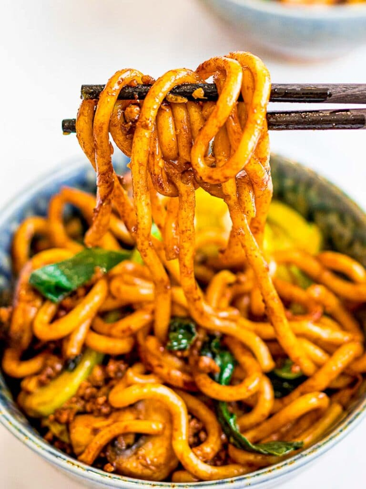

Yaki Udon

Ingredients
- 2 packets udon noodles, 13oz total
- 2 1/2 cups stir fry vegetables
- 2 stalks scallions
- 1/2 lb ground meat
- 1 Tbsp avocado oil
- 2 1/2 Tbsp dark soy sauce
- 2 Tbsp oyster sauce
- 1 Tbsp mirin
- 2 tsp brown sugar
- 1/2 tsp rice wine vinegar
Steps
- Mix all the ingredients for the sauce in a small bowl and set aside.
- Remove your udon noodles from its package and add it to a pot of boiling water. Stir gently until your udon noodles are separated and pliable. This should take 1 - 2 minutes.
- Rinse and drain your noodles under cold water. If not using right away, drizzle on a little bit of oil to keep them from sticking.
- Heat your pan over high heat and add the oil. Add in the ground meat and stir fry for 1 minute before adding the rest of your vegetables. Stir fry together for 2 to 3 minutes and then add in the noodles and sauce. Continue stir frying for about 3 minutes or until well combined. Serve immediately.